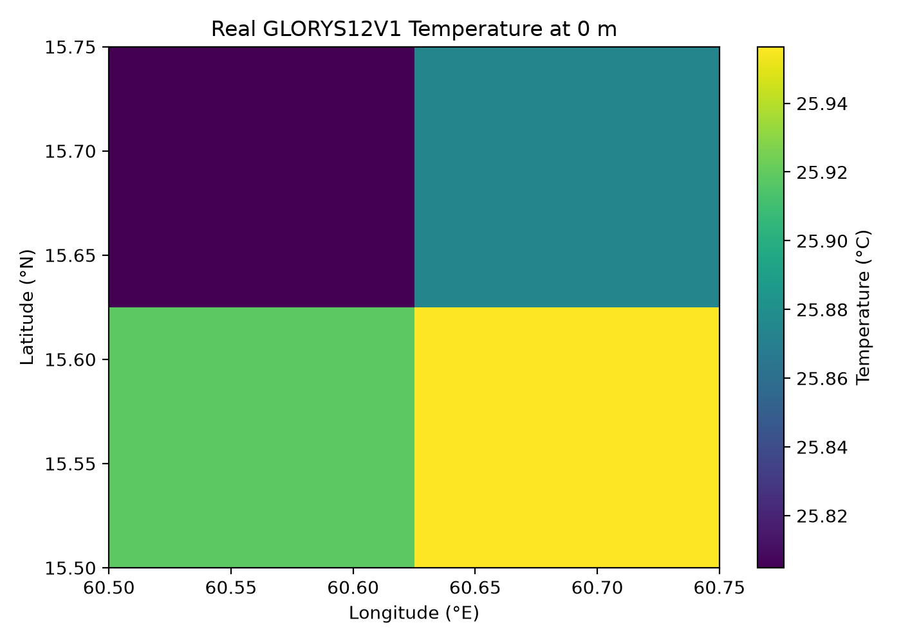
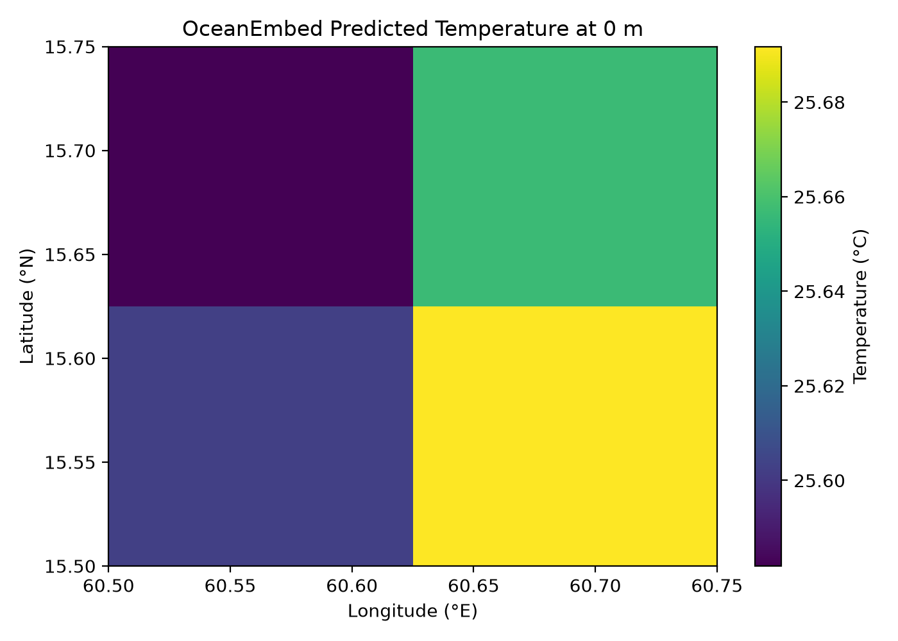
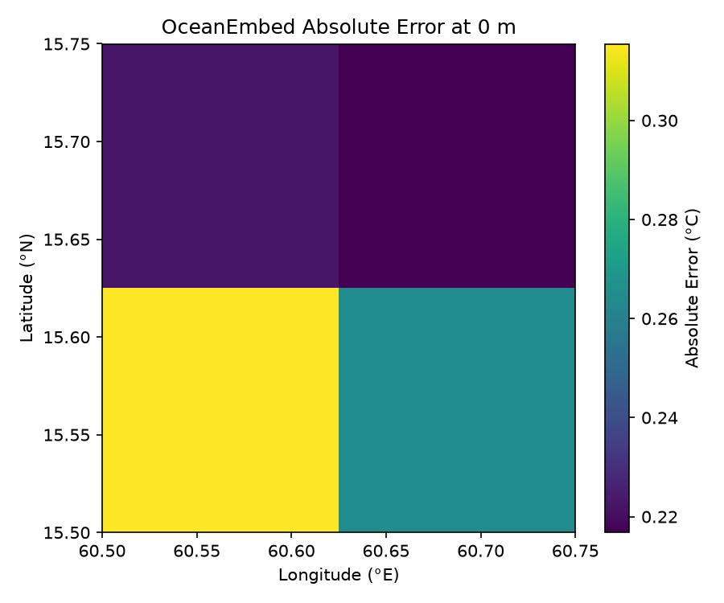
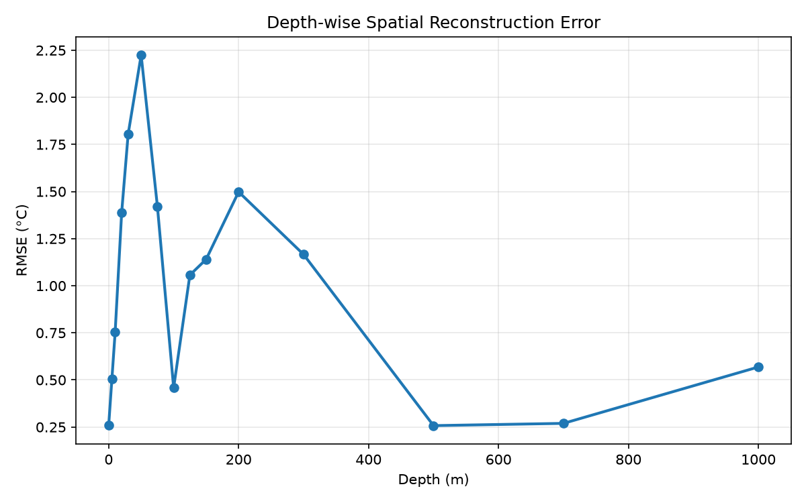
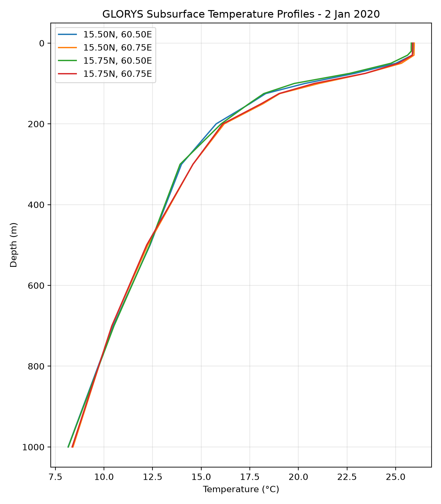
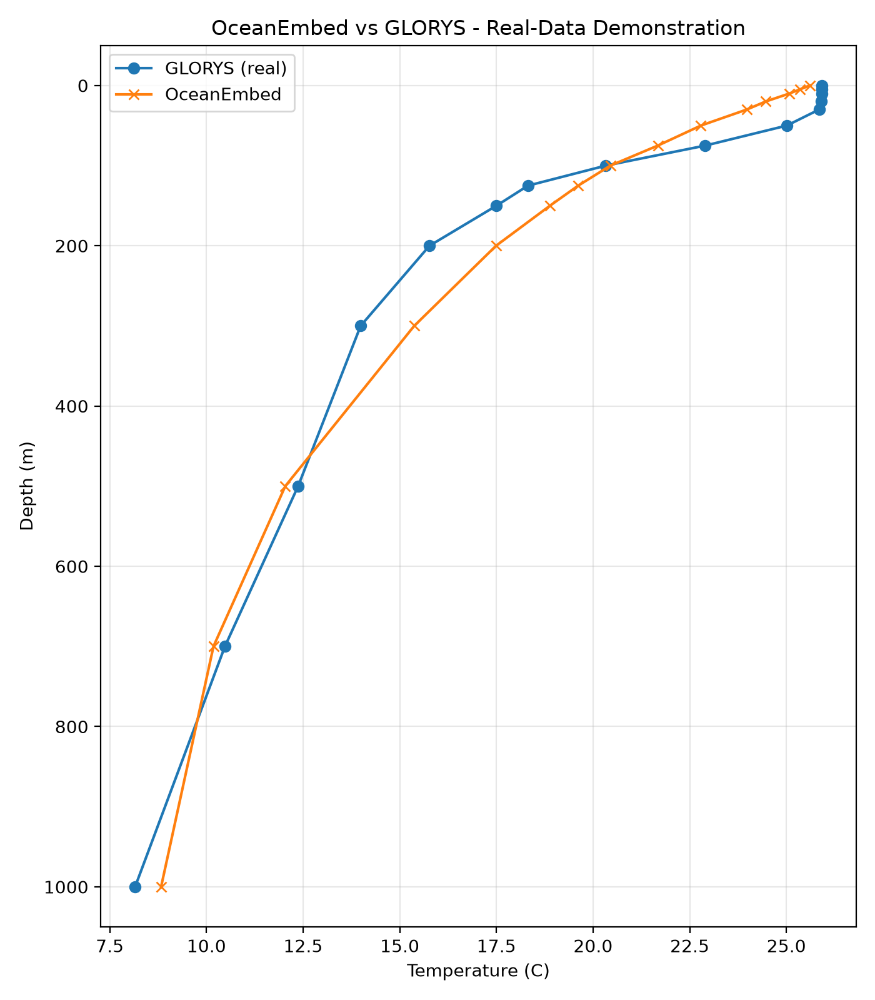

Satellite Observation-Based Subsurface Ocean Temperature Reconstruction
OceanEmbed is a prototype framework for estimating depth-wise ocean temperature profiles from surface ocean observations.
Temperature Profile Reconstruction
Enter the available surface ocean observations to generate a subsurface temperature profile.
Location
Surface Ocean Observations
Reconstruction Result
Predicted Temperature Values
| Depth (m) | Temperature (°C) |
|---|
Spatial Temperature Reconstruction
OceanEmbed can also be demonstrated as a spatial reconstruction system. The following demonstration uses a small real-data 0.25° × 0.25° grid derived from the processed GLORYS12V1 demonstration dataset.
Real GLORYS12V1

OceanEmbed Prediction

Spatial Absolute Error

Absolute temperature reconstruction error between OceanEmbed and GLORYS12V1 at the selected depth.
Spatial comparison between real GLORYS12V1 temperature and OceanEmbed reconstruction at the selected depth.
Spatial Reconstruction Error
The following error values are calculated from the four-point demonstration grid by comparing OceanEmbed predictions with the corresponding GLORYS12V1 temperatures.
Spatial RMSE: —
Overall correlation: 0.9868
Depth-wise Reconstruction Error

RMSE of the OceanEmbed reconstruction across the 15 standard depth levels in the demonstration grid.
About OceanEmbed
OceanEmbed is a prototype framework for reconstructing subsurface ocean temperature profiles from surface ocean observations. The system combines multiple surface variables with a deep-learning model to estimate temperature at standard ocean depths.
The prototype is designed around the North Indian Ocean and follows the requirements of the Smart India Hackathon problem SIH26066.
Methodology
1. Surface observations
The model uses seven surface variables: SST, SSS, SSH/SLA, surface current U and V, and surface wind U and V.
2. Data preprocessing
The input products are harmonized in time and space, converted to consistent units, and prepared for model input. Temperature profiles are interpolated to standard depth levels.
3. Embedding engine
OceanEmbed compresses the seven surface variables into a 16-dimensional latent representation before reconstructing the subsurface temperature profile.
4. Temperature reconstruction
The decoder produces temperatures at 15 standard depths from the surface down to 1000 metres.
Data Sources
The prototype preprocessing pipeline was developed using ocean observation and reanalysis products available through Copernicus Marine services.
| Variable | Data source / product | Purpose |
|---|---|---|
| SST | OSTIA SST | Surface temperature |
| SSS | Multi-Observation SSS | Surface salinity |
| SSH / SLA | DUACS Sea Level | Sea-level information |
| Current U / V | Sea-level derived currents | Surface circulation |
| Wind U / V | ASCAT wind product | Surface wind forcing |
| Temperature target | GLORYS12V1 | Subsurface temperature reference |
Prototype Performance
Controlled synthetic test
MAE: 0.112 °C
RMSE: 0.149 °C
Bias: +0.003 °C
Evaluated on held-out samples from the realistic synthetic dataset.Real GLORYS demonstration
MAE: 0.967 °C
RMSE: 1.147 °C
Bias: -0.238 °C
Evaluation on four complete real GLORYS samples. This is a demonstration subset, not final validation.Real GLORYS Demonstration
The following plots show the real GLORYS12V1 ocean temperature profiles extracted during the prototype data-processing stage. The profiles are interpolated to the 15 standard depth levels used by OceanEmbed.

Figure 1. Real GLORYS12V1 subsurface temperature profiles for the processed demonstration region.
Real Data vs OceanEmbed Demonstration
The second figure compares the GLORYS12V1 temperature profiles with predictions produced by the current OceanEmbed prototype for the available complete real-data samples.

Figure 2. Comparison of real GLORYS12V1 temperature profiles with OceanEmbed predictions for the available demonstration samples.
Output Depth Levels
The current prototype reconstructs temperature at the following standard depth levels:
Limitations and Next Stage
- The current neural network is trained on a controlled realistic synthetic dataset.
- Only a small real GLORYS subset has been used for the present demonstration.
- Full-scale synchronized satellite/observation and GLORYS training has not yet been performed.
- Independent validation using gridded ARGO observations is planned for the next stage.
- The prototype currently demonstrates the reconstruction workflow rather than operational ocean forecasting.